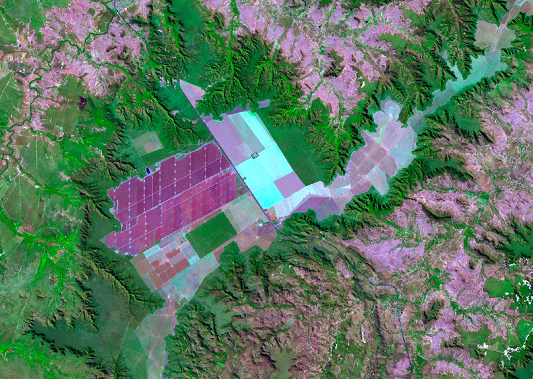

ZENIT SENSOR - AO VIVO
Umidade do solo
68%
NormalTemperatura
27°C
NormalpH do solo
5.8
AtençãoNutrientes
72%
NormalDados satelitais — Sentinel-2
NDVI
0.74
Vegetação saudávelTemp. superficial
31°C
ElevadaAlerta ativo
pH abaixo do ideal
Valor atual 5.8 — ideal entre 6.0 e 7.0 para milho
Histórico de alertas
pH abaixo do ideal
Valor 5.8 — ideal 6.0-7.0
Janela de colheita em 5 dias
Previsão favorável de 12 a 14/06
Chuva prevista amanhã
18mm — irrigação não necessária
Recomendações ativas
Irrigação
Irrigar amanhã cedo — estimativa de 20mm
Chuva de 8mm prevista para quarta, umidade em 68%
Solo
Aplicar calcário para corrigir pH
pH em 5.8 — abaixo do ideal para milho (6.0-7.0)
Colheita
Janela ideal: 12 a 14 de junho
NDVI 0.74 estável, maturação indicada pela temperatura
NDVI — últimos 7 dias
Umidade do solo — últimos 7 dias
Imagem orbital — Sentinel-2
